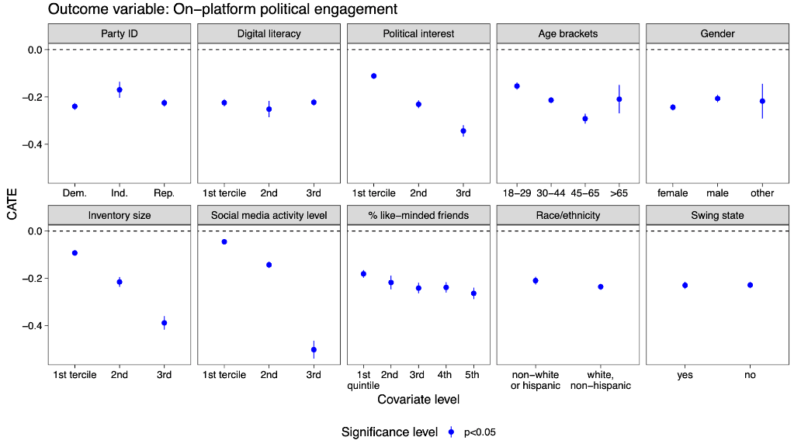

The US2020 Facebook and Instagram Election Project (US2020 from here out), the first four papers of which were recently published in Science and Nature, can be the blueprint for meaningful regulation of large online platforms. It’s crucial not just to be satisfied in access to data, but in access to rigorous tests of how changes on platforms affect society.
The key connection is to avoid examining the project through a purely academic lens about academic research and the knowledge gained through the studies.
The news post at Science by Kai Kupferschmidt focuses on this dimension, with input from Joe Bak-Coleman’s saying that “This is not how research on the potential dangers of social media should be conducted”. He focuses on the research and the project as a model for gaining academic knowledge.
The commentary by project rapporteur Michael Wagner focused, too, on the project as largely academic in nature. Wagner gets one element of the project exactly correct from this dimension: It requires the goodwill of Meta to work correctly, which makes a difficult model for future scholarly work.
Meta wants the project interpreted solely as the results of academic research based on Nick Clegg’s news post: “Its findings will be hugely valuable to us, and we hope they will also help policymakers as they shape the rules of the road for the internet”. The findings of these studies should shape discourse on regulation, and not the structure of the collaboration itself. These findings are (overall) pretty positive for Meta. They show that algorithms are powerful (they change a lot about on-platform behavior), but they aren’t scary (they don’t swing elections). There are subtleties here, and I don’t mean to get into a detailed accounting of the exact substantive results, but I think this is the reading of the Project Meta wants to push to advertisers (the former story) and to regulators (the latter one).
Brandon Silverman gets nearly to the quick: “That’s why ultimately we need regulation if we want more of this sort of thing and for me, that represents one of the biggest promises of the Digital Services Act[…]” We should think about regulation as a way to free this kind of information from tech companies. But he doesn’t go nearly far enough. A model of data-sharing (proposed in the next tweet) does not go far enough, and it sets up perverse incentives for companies to neglect rigorous measurements of changes that might place them in a negative light.
My argument in this piece is that the structure of collaboration of US2020—sophisticated experts telling online platforms what they must measure about societal impact—should be the future of the regulation of the internet. Don’t simply accept the framing that Nick Clegg pushes, that we should take these findings and make policies based solely on them (implicitly assuming they are the only evidence we might get). The way platforms work is constantly changing: we should not seek perfect generalizability of the findings, we should instead seek systems which allow us to continue to probe and measure how these platforms work flexibly, as they change.
What do we want to measure?
Many of the most important questions we have about tech’s relationship to society are counterfactuals: If Facebook were otherwise identical but ranked Feed chronologically rather than by an algorithm, would there be more or less hate? If YouTube made different choices in recommendations, would it make people less extreme? A counterfactual, fundamentally, asks what would happen were the world just a little bit different. When thinking about the regulation of technology, we’re asking questions like these: if Facebook were to operate differently in some way, would society be better or would it be worse? This embeds two questions: One is a scientific question: what would society be like if Facebook were different? The second is a question of values: Would that counterfactual society be better or worse?
The scientific question can be answered through randomized control trials (RCTs). Such RCTs, however, can only truly be implemented by and within these large tech platforms, so under the status quo the question of values can only be answered by people within those walls. Engineers, data scientists, managers and executives of tech companies: mostly good hearted people, but people who work within institutions that require they think about the good of the platform rather than the good of society.
I worked within Meta for years on improving the process through which the company evaluated potential counterfactual versions of itself – in other words, testing changes through A/B tests. The entire business of software development is to try lots of stuff out but only keep the things that work towards the business’s goals. These goals are expressed in numbers (“KPIs” or “metrics”). My team built machine learning tools to realize these business goals. When business values change, so too, can the platform. Look no further than Facebook’s 2018 pivot to “meaningful social interactions”. Once new numbers are chosen as the target, machine learning gears turn and the platform (in many ways a black box to everyone) pivots on a dime to optimize these new metrics.
Many of these business values are widely held societal norms: nobody in tech wants more spam or child sexual abuse material, for instance. As such, companies develop sophisticated (albeit imperfect) systems for detecting and removing such content and ensuring that it is not distributed widely. Other metrics, like the time spent on a platform, are less clear cut: essentially all internet platforms prize this as a KPI, but it does not necessarily align with what is best for society.
Democratic societies have systems for answering questions of values: we elect representatives who enact policies so that society embodies the values we care about. When such values are contentious, there is conflict, of course, but there is a peaceful process for resolving that conflict through our institutions. Tech lacks the mechanism to ensure that it embodies societal values: even market pressure isn’t straightforward, since usage is free thanks to advertising.
Who gets to measure them?
The only real counterfactual evidence about tech’s effects is controlled by tech itself. This is the promise of US2020, a project I worked on while at Meta. The unique power of this project is that it reveals the counterfactuals which—but for the press of a button—Facebook can decide to make reality. Asking ‘Should Facebook remove algorithmic ranking?’ contains both a question of science and a question of values – and this project answers the question of science, showing precisely what would happen if Facebook did no algorithmic ranking on Feed. As a result, the question of values is finally exposed to democratic scrutiny. Do we measure the right things to effectively answer that question? The way forward can only be an iterative refinement of asking the question and trying to improve the answers we get.
In short, the Election Project is a blueprint for the effective regulation of technology companies. The approach is straightforward and consistent with the language of Chapter III, Section 5 of the Digital Services Act. Regulators can require that for important, societally relevant changes, Very Large Online Platforms must run and report the results of RCTs. These are far more informative than audits of the processes used in these platforms or providing data access without counterfactuals, or trying to explain the precise details of how underlying machine learning systems work (which are mostly black boxes to everyone internally, too). To reiterate: in general, many of the most important systems at VLOPs are not truly “understood” by those who create them. Rather, they are refined by measuring what they do, and launching the changes that push those measurements in a direction that those measurements deem positive.
Philipp Lorenz-Spreen has already compellingly argued that Article 40 of the DSA is a way to free the results of internal A/B tests to the public. Tech companies are already running lots of A/B tests, so maybe we can just require them to share those results! This is a very positive step, but it isn’t enough. The problem with limiting ourselves to these tests is that platforms can simply stop doing them on issues they feel present a regulation risk. We’re back in the same place we started where our ability to understand counterfactuals is dependent on the platforms’ goodwill.
Platforms already limit what is measured internally for this reason. A direct example of this is race in the US. Put simply, Meta works hard to limit what it knows about race in order to preclude legal risks like it faced around housing discrimination in 2019. When I left Meta, the primary way concerns about disparate impact were examined were through zip-code level demographics. This process ensures that individual users’ race was not explicitly inferred, so race cannot be explicitly taken into account in decisions. To be clear, this does not mean that systems do not have disparate racial impacts. It does, however, make it very hard to measure when those disparate impacts might exist.
There are also precedents for requirements to run RCTs, such as with the UK’s Competition and Markets Authority requirement that Google test changes to third-party cookies. The logic here was that Google’s change to how cookies work might lead to big changes in how the advertising market works. Without understanding that impact, the regulator can not make an informed decision about whether it was anti-competitive or not. Hence, require Google to measure the impact, since they’re the only people who can.
More traditionally, this is key to the FDA’s regulation of food and medicine. The regulator is not generally performing the clinical trials to demonstrate safety itself: it instead requires that the would-be producer carry out the required tests, and ensures that those tests meet the standards of scientific rigor necessary to ensure safety. We think it’s important to verify that drugs meet at least a minimal standard before pushing them out broadly to all citizens. The same should be true for large changes to internet platforms. Note that the structure of clinical trials under the FDA would be exactly subject to the same critiques that are being made of US2020.
The point is not who is actually running the test, but who is defining what particular tests must be conducted and how resulting outcomes must be measured. As an insider to this process, let me be very clear: US2020 took incredible care that external academics understood in detail the process by which concepts were operationalized and measured. A lot of the back-and-forth in the collaboration was specifically about this: academics didn’t understand how data is collected and stored internally, and internal researchers needed clear operationalizations to measure the concepts requested. I think I saw someone throw out that there were around 1000 variables to figure this out for.
The DSA provides an avenue for this kind of accountability through counterfactual evidence, but it isn’t through Article 40. Instead, it’s through Article 34. Allow me to quote:
Providers of very large online platforms and of very large online search engines shall diligently identify, analyse and assess any systemic risks in the Union stemming from the design or functioning of their service and its related systems, including algorithmic systems, or from the use made of their services.
By suggesting that these risks arise from the design or functioning of the service, this sentence invokes counterfactuals. The question at play is whether platform design causes these risks. The only valid way to assess this is through counterfactuals as measured through randomized control trials. The counterfactual risk is what VLOPs should demonstrate in their risk assessments. I recognize that this plain-english reading is not formal legal analysis (and I am not a lawyer). Given the latitude of regulators to choose how this law should be interpreted, I hope that they do so in the way that will give them actual answers to the societally important questions of counterfactual risk. US2020 shows them how they can do that. Unfortunately, based on the Commission’s current example of how to apply the risk management framework, this is not likely to be the approach taken to interpreting the DSA.
When are they measured?
Time is a crucial element of this story. The number one complaint by everyone involved in US2020 is the time it took to make it happen. As Kevin Munger emphasizes, it was 32 months after the US2020 studies were actually performed that they were published. Part of that delay was because of peer review (note that the chronological feed paper was originally received by Science on March 7, 2022, but was only published on July 27, 2023. The paper was definitely improved in that time, but it goes without saying that nothing about the intervention or outcome measurement could have been improved or changed as a result of this peer review. It had already happened.
Surely nothing changed about Facebook in that time, right? Well, shortly after submission of chrono-feed, on July 27, 2022, Mark Zuckerberg made an announcement on the Q2 earnings call: “Right now, about 15% of content in a person’s Facebook feed and a little more than that of their Instagram feed is recommended by our AI from people, groups, or accounts that you don’t follow. We expect these numbers to more than double by the end of next year.” Shit. It’s at this point that I’ll note we found clear heterogeneity of the effects of chronological feed on variables like how much uncivil content and slurs show up on Feed, as well as on-platform political behavior on the dimension of inventory size. When there’s more content Feed could show you, there’s more potential for Feed algorithms to change what you see.

Larger inventory is associated with larger effects on on-platform political behavior.Kevin and I have a new working paper showing exactly how poorly agnostic approaches to generalizability fare when reality refuses to stay fixed. When reality is changing at internet speed, then it’s necessary that our knowledge generation process matches that speed. US2020 could do better on this. A lot of work had to be done to mitigate the risks that were inherent in the project as the first of its kind. There was a whole software infrastructure that had to be built from the ground up for protecting privacy, which was done at a pretty incredible speed. There was also a lot of work to build up the internal processes to make everything work both within the collaboration and within Meta (e.g. legal and privacy reviews to make sure user data was appropriately protected). And as stated above, there was a whole arduous process of defining meaningful operationalizations of everything: to a real extent, the scientific language of internal and external researchers wasn’t exactly the same, so translation was required.
If we’re thinking about an ongoing regulatory process, however, a lot of these concerns go away: an infrastructure and set of systems will be set up (by necessity) to streamline processes. Variable definitions will be negotiated over time, so that’s largely just a fixed cost per variable. If the output is regulatory rather than academic, the results wouldn’t need to be gated by the fickle peer review process (just government bureaucracy!).
Defining appropriate implementation of the regulations, too, must be a negotiated and long-term process. Meta has spent years defining specific internal metrics to understand the best dimensions of platform behavior to measure for business purposes. We cannot expect US2020 to have gotten the right societally important dimensions correct on the first try. DSA requires platforms to measure risks “on civic discourse and electoral processes, and public security”. How should these be operationalized? This can only be an iterative process as we see what kinds of measurements are both informative about what we care about in the world and sensitive to the kinds of changes VLOPs make. Iteration on the US2020 model is how to begin this process of refinement.
Wrapping it up
If we want to truly understand a world where tech is different in some way, we must change it in that way and measure what happens as a result. This is how Meta ensures Feed aligns with its business values, and this is the only way to ensure Feed – alongside all other aspects of online platforms – aligns with our societal values, as well. This may require platforms to run RCTs they would not have already run: we may imagine changes that they have not previously tested. At the very least, it will almost certainly be necessary to require that they measure outcomes they might not otherwise measure. In the US, for instance, this might mean requiring that they collect data on race that they are otherwise reluctant to hold.
US2020 has many of the features that are necessary for this kind of counterfactual accountability. It provides rigorous evidence of how Meta’s products would work if we were to change them. The RCTs were designed by external academics with full control rights, whose incentive is not to improve Meta’s bottom-line, but to expose answers to societally relevant questions. Meta had no substantial freedom to say no to such requests. It was not fast enough, nor was it large enough scale (e.g. it was only in the US). Regulators don’t currently have the expertise in-house to do the work that these academics did in asking good questions and co-designing studies to answer them. This is an important problem to solve, but other fields (like the FDA) have shown that such expertise can be acquired by regulatory agencies.
The biggest problem with US2020 is that it only exists out of Meta’s goodwill. And given how expensive it was for Meta, it’s not clear how much of that there is left. Look through the author list for the Meta employees – most worked primarily on this project for the last 3 years, and lots of other engineers and data scientists contributed substantial time as well. These people are all superstars and just their direct compensation over that time is a huge commitment from Meta: easily millions of dollars, likely tens of millions. Given recent belt-tightening, I wouldn’t count on Meta independently finding this a good tradeoff solely in order to be transparent. If we want to guarantee this kind of transparency from internet platforms, then we shouldn’t just hope that they will keep choosing to bring us rigorous counterfactual evaluation. Government should require it.
Think other people should read this? Feel free to share:
Reuse
Citation
@online{dimmery2023,
author = {Dimmery, Drew},
title = {A {Blueprint} for the {Regulation} of {Tech}},
date = {2023-09-11},
url = {https://ddimmery.com/posts/a-blueprint-for-the-regulation-of-tech},
langid = {en}
}